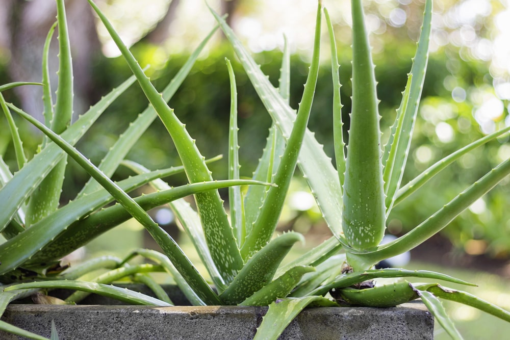

Uses of Aloe Vera 🌿
- Skin Care – Helps soothe sunburns, acne, and psoriasis.
- Wound Healing – Speeds up recovery for cuts and burns.
- Digestive Health – Aids in relieving constipation and soothing acid reflux.
- Immune Boosting – Contains antioxidants that support overall health.
- Oral Health – Used in mouthwashes to reduce gum inflammation.
- Diabetes Management – May help lower blood sugar levels.
Diseases Aloe Vera May Help With 🏥
- Burns & Wounds – Its cooling and anti-inflammatory properties promote healing.
- Acne & Psoriasis – Reduces redness and irritation.
- Constipation & Heartburn – Supports digestive health.
- Diabetes – May improve insulin sensitivity and lower blood sugar.
- Herpes & Mouth Sores – Helps with pain relief and healing. Herpes & Mouth Sores – Helps with pain relief and healing.
Parts

Ayurvedic Name:Ghritkumari Patra
Acts as a protective barrier; traditionally used externally for skin wounds and burns.Alovera Pulp

Ayurvedic Name:Kumari Sara
Used for healing wounds, moisturizing skin, soothing burns, and as an internal coolant.Alovera Latex

Ayurvedic Name:Kumari Rasa
Used as a natural laxative in controlled doses (strong purgative).Roots

Ayurvedic Name:Kumari moola
Rarely used in Ayurveda, but sometimes for detox formulations.Flowers